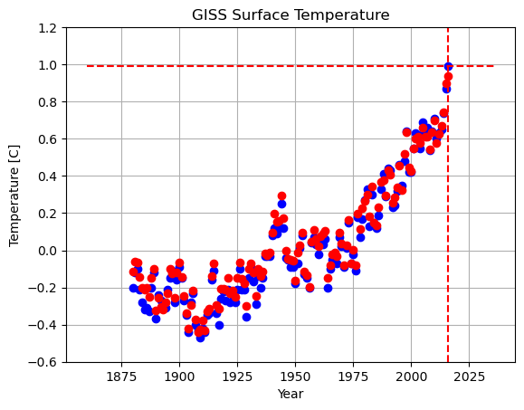
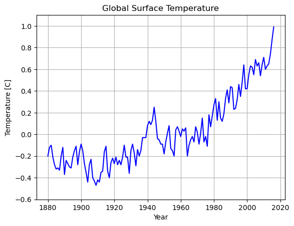
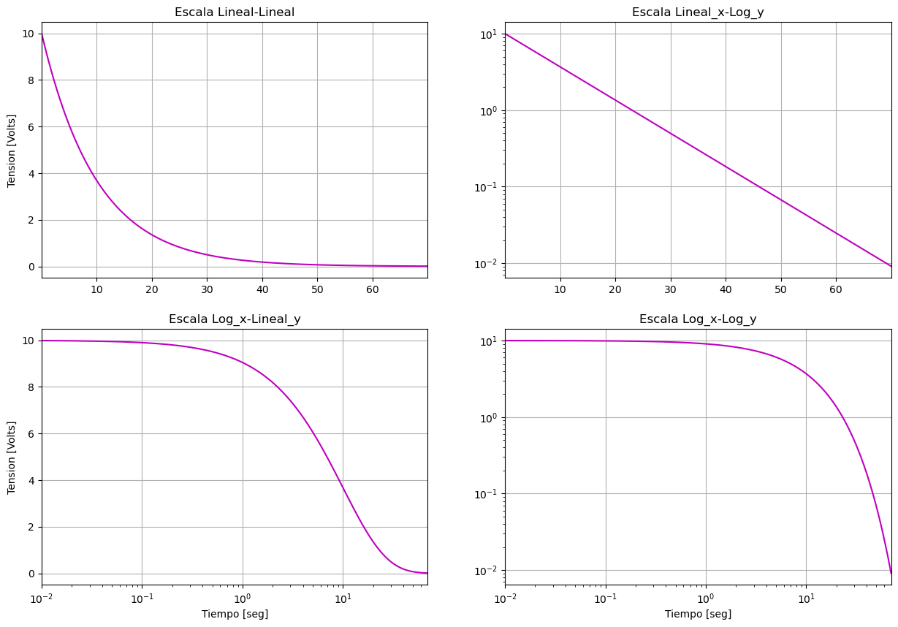
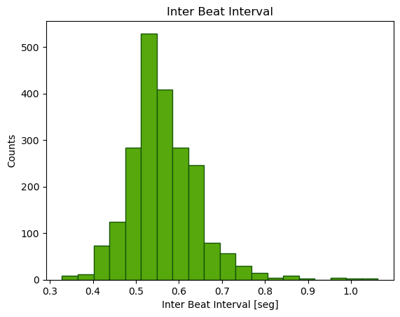

Introduccion a la Visualizacion de datos con Python
Contents
Introduccion a la Visualizacion de datos con Python#
(Intro no exahustiva)
Links utiles:
https://gilberttanner.com/blog/introduction-to-data-visualization-inpython/
https://github.com/stefmolin/python-data-viz-workshop/tree/main/notebooks
https://www.analyticsvidhya.com/blog/2021/10/a-comprehensive-guide-on-data-visualization-in-python/
Se levantan las librerias a utilizar
import matplotlib.pyplot as plt
import pandas as pd
import numpy as np
Scatter plot#
Global Temperature Time Series
GISS Surface Temperature (GISTEMP)
Climate at a Glance (GCAG)
Data soruce: https://datahub.io/core/global-temp#data
temp = pd.read_csv('./external_data/Global_Temperature.csv')
tempGISTEMP = temp[temp.Source == 'GISTEMP']
tempGCAG = temp[temp.Source == 'GCAG']
print(temp.head())
# Encontrar maximo y minimo
tempGISTEMP['Mean'].idxmax()
Source Year Mean
0 GCAG 2016 0.9363
1 GISTEMP 2016 0.9900
2 GCAG 2015 0.8998
3 GISTEMP 2015 0.8700
4 GCAG 2014 0.7408
1
# create a figure and axis
fig, ax = plt.subplots()
min_y = -0.6
max_y = 1.2
# scatter plot
ax.scatter(tempGISTEMP['Year'], tempGISTEMP['Mean'],c='b')
ax.scatter(tempGCAG['Year'], tempGCAG['Mean'],c='r')
ax.vlines(tempGISTEMP['Year'][tempGISTEMP['Mean'].idxmax()],min_y,max_y, colors='r', linestyles="dashed")
ax.hlines(tempGISTEMP['Mean'].max(),tempGISTEMP['Year'].min()-20,tempGISTEMP['Year'].max()+20, colors='r', linestyles="dashed")
# set a title and labels
#Titulo
ax.set_title('GISS Surface Temperature')
#Etiqueta del exe X
ax.set_xlabel('Year')
#Etiqueta del exe Y
ax.set_ylabel('Temperature [C]')
ax.set_ylim([min_y, max_y])
ax.grid()
ax.set_axisbelow(True)

Line plot#
# create a figure and axis
fig, ax = plt.subplots()
# line plot
line1, = ax.plot(tempGISTEMP['Year'], tempGISTEMP['Mean'],c='b')
#line2, = ax.plot(tempGCAG['Year'], tempGCAG['Mean'],c='r',marker='o')
#ax.legend([line1, line2], ['GISTEMP', 'GCAG'])
# set a title and labels
#Titulo
ax.set_title('Global Surface Temperature')
#Etiqueta del exe X
ax.set_xlabel('Year')
#Etiqueta del exe Y
ax.set_ylabel('Temperature [C]')
ax.set_ylim([-0.6, 1.1])
ax.grid()
ax.set_axisbelow(True)

Line plot - Log Scale#
Ejemplo de evolucion en el tiempo de una funcion exponencial de la forma:
\[ V(t) = V_{0}*e^{-t/RC} \]
fig, ax = plt.subplots(2,2)
fig.set_size_inches(15, 10)
dt = 0.01
t = np.arange(dt, 70, dt)
R = 10E6 # Resistencia
C = 1E-06 # Capacitancia
V0 = 10 # Tension inicial
V_t = V0*np.exp(-t/(R*C))#/V0
ax[0][0].plot(t, V_t, c='m')
ax[0][0].grid()
ax[0][0].set_title("Escala Lineal-Lineal")
ax[0][0].set_xlabel(" ")
ax[0][0].set_ylabel("Tension [Volts]")
ax[0][0].set_xlim(np.min(t), np.max(t))
ax[1][0].semilogx(t, V_t, c='m', base=10)
ax[1][0].grid()
ax[1][0].set_title("Escala Log_x-Lineal_y")
ax[1][0].set_xlabel("Tiempo [seg]")
ax[1][0].set_ylabel("Tension [Volts]")
ax[1][0].set_xlim(np.min(t), np.max(t))
ax[0][1].semilogy(t, V_t, c='m', base=10)
ax[0][1].grid()
ax[0][1].set_title("Escala Lineal_x-Log_y")
ax[0][1].set_xlabel(" ")
ax[0][1].set_ylabel(" ")
ax[0][1].set_xlim(np.min(t), np.max(t))
ax[1][1].loglog(t, V_t, c='m')
ax[1][1].grid()
ax[1][1].set_title("Escala Log_x-Log_y")
ax[1][1].set_xlabel("Tiempo [seg]")
ax[1][1].set_ylabel(" ")
ax[1][1].set_xlim(np.min(t), np.max(t))
plt.show()

Histogram#
Dataset de medidas fisiologicas durante examanes#
Source: https://physionet.org/content/wearable-exam-stress/1.0.0/
phys_meas = pd.read_csv('./external_data/Data_physio_exams/S1/Final/IBI.csv', header=0,names = ['time','IBI'])
print(phys_meas.head(10))
print(phys_meas['IBI'].max())
print(phys_meas['IBI'].min())
time IBI
0 84.847634 0.468771
1 85.347657 0.500023
2 85.722674 0.375017
3 107.754932 0.437520
4 108.223704 0.468771
5 108.645598 0.421894
6 109.114370 0.468771
7 109.520638 0.406269
8 109.989410 0.468771
9 110.442555 0.453146
1.062549
0.32814
# create figure and axis
fig, ax = plt.subplots()
# plot histogram
ax.hist(phys_meas['IBI'], color="#57A80C", bins=20, edgecolor = "#15550A")
# set title and labels
ax.set_title('Inter Beat Interval')
ax.set_xlabel('Inter Beat Interval [seg]')
ax.set_ylabel('Counts')
plt.show()

Bar plot#
phys_meas = pd.read_csv('./external_data/Data_physio_exams/S5/Final/HR.csv', header=0,names=['HR'])
print(phys_meas.head(10))
print(phys_meas['HR'][1:].max())
print(phys_meas['HR'][1:].min())
#limits HR
lowHR = 60
highHR = 100
phys_meas['range'] = "Normal"
phys_meas['range'][phys_meas['HR']>highHR] = "High"
phys_meas['range'][phys_meas['HR']<lowHR] = "Low"
HR
0 1.00
1 118.00
2 84.50
3 97.67
4 85.25
5 97.80
6 94.83
7 104.14
8 103.38
9 103.56
139.68
56.38
/var/folders/kc/w9qf361n0lv2428kf159qtqm0000gn/T/ipykernel_22255/3589669874.py:10: SettingWithCopyWarning:
A value is trying to be set on a copy of a slice from a DataFrame
See the caveats in the documentation: https://pandas.pydata.org/pandas-docs/stable/user_guide/indexing.html#returning-a-view-versus-a-copy
phys_meas['range'][phys_meas['HR']>highHR] = "High"
/var/folders/kc/w9qf361n0lv2428kf159qtqm0000gn/T/ipykernel_22255/3589669874.py:11: SettingWithCopyWarning:
A value is trying to be set on a copy of a slice from a DataFrame
See the caveats in the documentation: https://pandas.pydata.org/pandas-docs/stable/user_guide/indexing.html#returning-a-view-versus-a-copy
phys_meas['range'][phys_meas['HR']<lowHR] = "Low"
# create a figure and axis
fig, ax = plt.subplots()
# count the occurrence of each class
dataCounts = phys_meas['range'].value_counts()
# get x and y data
ranges = dataCounts.index
frequency = dataCounts.values/dataCounts.values.sum()*100
# create bar chart
ax.bar(ranges, frequency, color="#FF8D85", edgecolor="black")
# set title and labels
ax.set_title('HR ranges')
ax.set_xlabel('HR range (High>100 Hz; Low<60 Hz)')
ax.set_ylabel('Frequency [%]')
Text(0, 0.5, 'Frequency [%]')
Topoplots#
Link: https://mne.tools/stable/auto_examples/visualization/evoked_topomap.html